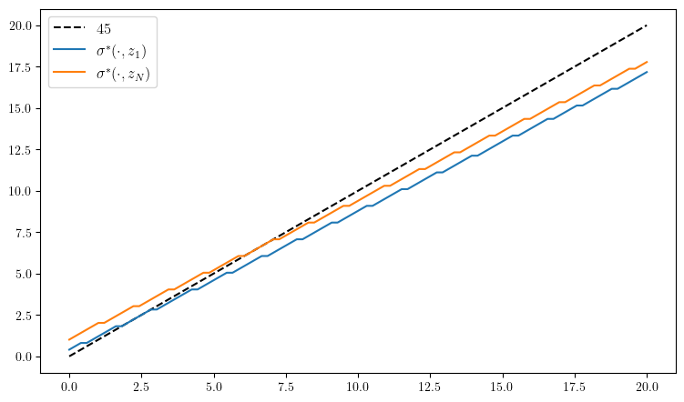
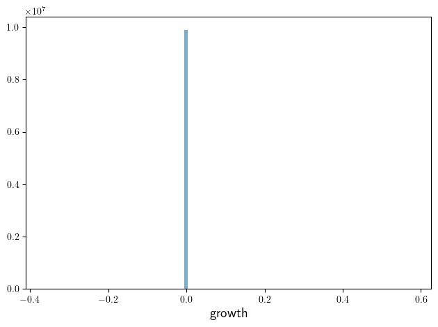

Markov Decision Processes#
Contents
inventory_dp.jl#
Show code cell source
include("s_approx.jl")
using Distributions
m(x) = max(x, 0) # Convenience function
function create_inventory_model(; β=0.98, # discount factor
K=40, # maximum inventory
c=0.2, κ=2, # cost paramters
p=0.6) # demand parameter
ϕ(d) = (1 - p)^d * p # demand pdf
x_vals = collect(0:K) # set of inventory levels
return (; β, K, c, κ, p, ϕ, x_vals)
end
"The function B(x, a, v) = r(x, a) + β Σ_x′ v(x′) P(x, a, x′)."
function B(x, a, v, model; d_max=100)
(; β, K, c, κ, p, ϕ, x_vals) = model
revenue = sum(min(x, d) * ϕ(d) for d in 0:d_max)
current_profit = revenue - c * a - κ * (a > 0)
next_value = sum(v[m(x - d) + a + 1] * ϕ(d) for d in 0:d_max)
return current_profit + β * next_value
end
"The Bellman operator."
function T(v, model)
(; β, K, c, κ, p, ϕ, x_vals) = model
new_v = similar(v)
for (x_idx, x) in enumerate(x_vals)
Γx = 0:(K - x)
new_v[x_idx], _ = findmax(B(x, a, v, model) for a in Γx)
end
return new_v
end
"Get a v-greedy policy. Returns a zero-based array."
function get_greedy(v, model)
(; β, K, c, κ, p, ϕ, x_vals) = model
σ_star = zero(x_vals)
for (x_idx, x) in enumerate(x_vals)
Γx = 0:(K - x)
_, a_idx = findmax(B(x, a, v, model) for a in Γx)
σ_star[x_idx] = Γx[a_idx]
end
return σ_star
end
"Use successive_approx to get v_star and then compute greedy."
function solve_inventory_model(v_init, model)
(; β, K, c, κ, p, ϕ, x_vals) = model
v_star = successive_approx(v -> T(v, model), v_init)
σ_star = get_greedy(v_star, model)
return v_star, σ_star
end
# == Plots == #
using PyPlot
using PyPlot
using LaTeXStrings
PyPlot.matplotlib[:rc]("text", usetex=true) # allow tex rendering
# Create an instance of the model and solve it
model = create_inventory_model()
(; β, K, c, κ, p, ϕ, x_vals) = model
v_init = zeros(length(x_vals))
v_star, σ_star = solve_inventory_model(v_init, model)
"Simulate given the optimal policy."
function sim_inventories(ts_length=400, X_init=0)
G = Geometric(p)
X = zeros(Int32, ts_length)
X[1] = X_init
for t in 1:(ts_length-1)
D = rand(G)
X[t+1] = m(X[t] - D) + σ_star[X[t] + 1]
end
return X
end
function plot_vstar_and_opt_policy(; fontsize=16,
figname="../figures/inventory_dp_vs.pdf",
savefig=false)
fig, axes = plt.subplots(2, 1, figsize=(8, 6.5))
ax = axes[1]
ax.plot(0:K, v_star, label=L"v^*")
ax.set_ylabel("value", fontsize=fontsize)
ax.legend(fontsize=fontsize, frameon=false)
ax = axes[2]
ax.plot(0:K, σ_star, label=L"\sigma^*")
ax.set_xlabel("inventory", fontsize=fontsize)
ax.set_ylabel("optimal choice", fontsize=fontsize)
ax.legend(fontsize=fontsize, frameon=false)
if savefig == true
fig.savefig(figname)
end
end
function plot_ts(; fontsize=16,
figname="../figures/inventory_dp_ts.pdf",
savefig=false)
X = sim_inventories()
fig, ax = plt.subplots(figsize=(9, 5.5))
ax.plot(X, label=L"X_t", alpha=0.7)
ax.set_xlabel(L"t", fontsize=fontsize)
ax.set_ylabel("inventory", fontsize=fontsize)
ax.legend(fontsize=fontsize, frameon=false)
ax.set_ylim(0, maximum(X)+4)
if savefig == true
fig.savefig(figname)
end
end
Completed iteration 25 with error 0.41042666932980687.
Completed iteration 50 with error 0.21020630773590554.
Completed iteration 75 with error 0.0955793466139987.
Completed iteration 100 with error 0.057146989183511465.
Completed iteration 125 with error 0.03436202542500766.
Completed iteration 150 with error 0.020703850094779597.
Completed iteration 175 with error 0.012485135075589682.
Completed iteration 200 with error 0.007532190047619736.
Completed iteration 225 with error 0.004544855368770584.
Completed iteration 250 with error 0.0027425060040116023.
Completed iteration 275 with error 0.0016549687240292599.
Completed iteration 300 with error 0.0009987055387483679.
Completed iteration 325 with error 0.0006026809169377145.
Completed iteration 350 with error 0.0003636960443387238.
Completed iteration 375 with error 0.00021947756642148875.
Completed iteration 400 with error 0.00013244692466685137.
Completed iteration 425 with error 7.992703666204193e-5.
Completed iteration 450 with error 4.823314469604156e-5.
Completed iteration 475 with error 2.9107000830919105e-5.
Completed iteration 500 with error 1.7565048199941202e-5.
Completed iteration 525 with error 1.0599887019679954e-5.
Completed iteration 550 with error 6.396657951768248e-6.
Completed iteration 575 with error 3.860157463009273e-6.
Completed iteration 600 with error 2.3294688880071135e-6.
Completed iteration 625 with error 1.4057523145538653e-6.
Terminated successfully in 643 iterations.
plot_ts (generic function with 1 method)
plot_vstar_and_opt_policy(savefig=true)

plot_ts(savefig=true)

finite_opt_saving_0.jl#
Show code cell source
using QuantEcon, LinearAlgebra, IterTools
function create_savings_model(; R=1.01, β=0.98, γ=2.5,
w_min=0.01, w_max=20.0, w_size=200,
ρ=0.9, ν=0.1, y_size=5)
w_grid = LinRange(w_min, w_max, w_size)
mc = tauchen(y_size, ρ, ν)
y_grid, Q = exp.(mc.state_values), mc.p
return (; β, R, γ, w_grid, y_grid, Q)
end
"B(w, y, w′, v) = u(R*w + y - w′) + β Σ_y′ v(w′, y′) Q(y, y′)."
function B(i, j, k, v, model)
(; β, R, γ, w_grid, y_grid, Q) = model
w, y, w′ = w_grid[i], y_grid[j], w_grid[k]
u(c) = c^(1-γ) / (1-γ)
c = w + y - (w′ / R)
@views value = c > 0 ? u(c) + β * dot(v[k, :], Q[j, :]) : -Inf
return value
end
"The Bellman operator."
function T(v, model)
w_idx, y_idx = (eachindex(g) for g in (model.w_grid, model.y_grid))
v_new = similar(v)
for (i, j) in product(w_idx, y_idx)
v_new[i, j] = maximum(B(i, j, k, v, model) for k in w_idx)
end
return v_new
end
"The policy operator."
function T_σ(v, σ, model)
w_idx, y_idx = (eachindex(g) for g in (model.w_grid, model.y_grid))
v_new = similar(v)
for (i, j) in product(w_idx, y_idx)
v_new[i, j] = B(i, j, σ[i, j], v, model)
end
return v_new
end
T_σ
finite_opt_saving_1.jl#
Show code cell source
include("finite_opt_saving_0.jl")
"Compute a v-greedy policy."
function get_greedy(v, model)
w_idx, y_idx = (eachindex(g) for g in (model.w_grid, model.y_grid))
σ = Matrix{Int32}(undef, length(w_idx), length(y_idx))
for (i, j) in product(w_idx, y_idx)
_, σ[i, j] = findmax(B(i, j, k, v, model) for k in w_idx)
end
return σ
end
"Get the value v_σ of policy σ."
function get_value(σ, model)
# Unpack and set up
(; β, R, γ, w_grid, y_grid, Q) = model
w_idx, y_idx = (eachindex(g) for g in (w_grid, y_grid))
wn, yn = length(w_idx), length(y_idx)
n = wn * yn
u(c) = c^(1-γ) / (1-γ)
# Build P_σ and r_σ as multi-index arrays
P_σ = zeros(wn, yn, wn, yn)
r_σ = zeros(wn, yn)
for (i, j) in product(w_idx, y_idx)
w, y, w′ = w_grid[i], y_grid[j], w_grid[σ[i, j]]
r_σ[i, j] = u(w + y - w′/R)
for (i′, j′) in product(w_idx, y_idx)
if i′ == σ[i, j]
P_σ[i, j, i′, j′] = Q[j, j′]
end
end
end
# Reshape for matrix algebra
P_σ = reshape(P_σ, n, n)
r_σ = reshape(r_σ, n)
# Apply matrix operations --- solve for the value of σ
v_σ = (I - β * P_σ) \ r_σ
# Return as multi-index array
return reshape(v_σ, wn, yn)
end
get_value
finite_opt_saving_2.jl#
Show code cell source
include("s_approx.jl")
include("finite_opt_saving_1.jl")
"Value function iteration routine."
function value_iteration(model, tol=1e-5)
vz = zeros(length(model.w_grid), length(model.y_grid))
v_star = successive_approx(v -> T(v, model), vz, tolerance=tol)
return get_greedy(v_star, model)
end
"Howard policy iteration routine."
function policy_iteration(model)
wn, yn = length(model.w_grid), length(model.y_grid)
σ = ones(Int32, wn, yn)
i, error = 0, 1.0
while error > 0
v_σ = get_value(σ, model)
σ_new = get_greedy(v_σ, model)
error = maximum(abs.(σ_new - σ))
σ = σ_new
i = i + 1
println("Concluded loop $i with error $error.")
end
return σ
end
"Optimistic policy iteration routine."
function optimistic_policy_iteration(model; tolerance=1e-5, m=100)
v = zeros(length(model.w_grid), length(model.y_grid))
error = tolerance + 1
while error > tolerance
last_v = v
σ = get_greedy(v, model)
for i in 1:m
v = T_σ(v, σ, model)
end
error = maximum(abs.(v - last_v))
end
return get_greedy(v, model)
end
# == Simulations and inequality measures == #
function simulate_wealth(m)
model = create_savings_model()
σ_star = optimistic_policy_iteration(model)
(; β, R, γ, w_grid, y_grid, Q) = model
# Simulate labor income (indices rather than grid values)
mc = MarkovChain(Q)
y_idx_series = simulate(mc, m)
# Compute corresponding wealth time series
w_idx_series = similar(y_idx_series)
w_idx_series[1] = 1 # initial condition
for t in 1:(m-1)
i, j = w_idx_series[t], y_idx_series[t]
w_idx_series[t+1] = σ_star[i, j]
end
w_series = w_grid[w_idx_series]
return w_series
end
function lorenz(v) # assumed sorted vector
S = cumsum(v) # cumulative sums: [v[1], v[1] + v[2], ... ]
F = (1:length(v)) / length(v)
L = S ./ S[end]
return (; F, L) # returns named tuple
end
gini(v) = (2 * sum(i * y for (i,y) in enumerate(v))/sum(v)
- (length(v) + 1))/length(v)
# == Plots == #
using PyPlot
using LaTeXStrings
PyPlot.matplotlib[:rc]("text", usetex=true) # allow tex rendering
fontsize=16
function plot_timing(; m_vals=collect(range(1, 600, step=10)),
savefig=false)
model = create_savings_model(y_size=5)
println("Running Howard policy iteration.")
pi_time = @elapsed σ_pi = policy_iteration(model)
println("PI completed in $pi_time seconds.")
println("Running value function iteration.")
vfi_time = @elapsed σ_vfi = value_iteration(model)
println("VFI completed in $vfi_time seconds.")
@assert σ_vfi == σ_pi "Warning: policies deviated."
opi_times = []
for m in m_vals
println("Running optimistic policy iteration with m=$m.")
opi_time = @elapsed σ_opi = optimistic_policy_iteration(model, m=m)
@assert σ_opi == σ_pi "Warning: policies deviated."
println("OPI with m=$m completed in $opi_time seconds.")
push!(opi_times, opi_time)
end
fig, ax = plt.subplots(figsize=(9, 5.2))
ax.plot(m_vals, fill(vfi_time, length(m_vals)),
lw=2, label="value function iteration")
ax.plot(m_vals, fill(pi_time, length(m_vals)),
lw=2, label="Howard policy iteration")
ax.plot(m_vals, opi_times, lw=2, label="optimistic policy iteration")
ax.legend(fontsize=fontsize, frameon=false)
ax.set_xlabel(L"m", fontsize=fontsize)
ax.set_ylabel("time", fontsize=fontsize)
if savefig
fig.savefig("../figures/finite_opt_saving_2_1.pdf")
end
return (pi_time, vfi_time, opi_times)
end
function plot_policy(; method="pi")
model = create_savings_model()
(; β, R, γ, w_grid, y_grid, Q) = model
if method == "vfi"
σ_star = value_iteration(model)
elseif method == "pi"
σ_star = policy_iteration(model)
else
σ_star = optimistic_policy_iteration(model)
end
fig, ax = plt.subplots(figsize=(9, 5.2))
ax.plot(w_grid, w_grid, "k--", label=L"45")
ax.plot(w_grid, w_grid[σ_star[:, 1]], label=L"\sigma^*(\cdot, y_1)")
ax.plot(w_grid, w_grid[σ_star[:, end]], label=L"\sigma^*(\cdot, y_N)")
ax.legend(fontsize=fontsize)
end
function plot_time_series(; m=2_000,
savefig=false,
figname="../figures/finite_opt_saving_ts.pdf")
w_series = simulate_wealth(m)
fig, ax = plt.subplots(figsize=(9, 5.2))
ax.plot(w_series, label=L"w_t")
ax.set_xlabel("time", fontsize=fontsize)
ax.legend(fontsize=fontsize)
if savefig
fig.savefig(figname)
end
end
function plot_histogram(; m=1_000_000,
savefig=false,
figname="../figures/finite_opt_saving_hist.pdf")
w_series = simulate_wealth(m)
g = round(gini(sort(w_series)), digits=2)
fig, ax = plt.subplots(figsize=(9, 5.2))
ax.hist(w_series, bins=40, density=true)
ax.set_xlabel("wealth", fontsize=fontsize)
ax.text(15, 0.4, "Gini = $g", fontsize=fontsize)
if savefig
fig.savefig(figname)
end
end
function plot_lorenz(; m=1_000_000,
savefig=false,
figname="../figures/finite_opt_saving_lorenz.pdf")
w_series = simulate_wealth(m)
(; F, L) = lorenz(sort(w_series))
fig, ax = plt.subplots(figsize=(9, 5.2))
ax.plot(F, F, label="Lorenz curve, equality")
ax.plot(F, L, label="Lorenz curve, wealth distribution")
ax.legend()
if savefig
fig.savefig(figname)
end
end
plot_lorenz (generic function with 1 method)
plot_timing(savefig=true)
Running Howard policy iteration.
Concluded loop 1 with error 100.
Concluded loop 2 with error 80.
Concluded loop 3 with error 34.
Concluded loop 4 with error 20.
Concluded loop 5 with error 11.
Concluded loop 6 with error 5.
Concluded loop 7 with error 5.
Concluded loop 8 with error 3.
Concluded loop 9 with error 1.
Concluded loop 10 with error 1.
Concluded loop 11 with error 1.
Concluded loop 12 with error 1.
Concluded loop 13 with error 1.
Concluded loop 14 with error 1.
Concluded loop 15 with error 1.
Concluded loop 16 with error 1.
Concluded loop 17 with error 1.
Concluded loop 18 with error 1.
Concluded loop 19 with error 1.
Concluded loop 20 with error 1.
Concluded loop 21 with error 1.
Concluded loop 22 with error 1.
Concluded loop 23 with error 1.
Concluded loop 24 with error 0.
PI completed in 0.7740595 seconds.
Running value function iteration.
Completed iteration 25 with error 0.536460823305255.
Completed iteration 50 with error 0.2757145835707817.
Completed iteration 75 with error 0.15964723339326525.
Completed iteration 100 with error 0.0949415406202121.
Completed iteration 125 with error 0.056923225476566586.
Completed iteration 150 with error 0.034240232785961666.
Completed iteration 175 with error 0.02062794785982902.
Completed iteration 200 with error 0.012437154854268329.
Completed iteration 225 with error 0.007501837673245859.
Completed iteration 250 with error 0.004525955103851231.
Completed iteration 275 with error 0.0027308880659973056.
Completed iteration 300 with error 0.0016478769789003422.
Completed iteration 325 with error 0.0009943978415378751.
Completed iteration 350 with error 0.0006000718833334417.
Completed iteration 375 with error 0.000362118316374449.
Completed iteration 400 with error 0.0002185243788304092.
Completed iteration 425 with error 0.00013187135262171523.
Completed iteration 450 with error 7.957958084148231e-5.
Completed iteration 475 with error 4.802342870391385e-5.
Completed iteration 500 with error 2.898043207721912e-5.
Completed iteration 525 with error 1.7488664326492653e-5.
Completed iteration 550 with error 1.0553790730227774e-5.
Terminated successfully in 554 iterations.
VFI completed in 5.0775855 seconds.
Running optimistic policy iteration with m=1.
OPI with m=1 completed in 5.1720518 seconds.
Running optimistic policy iteration with m=11.
OPI with m=11 completed in 0.6035226 seconds.
Running optimistic policy iteration with m=21.
OPI with m=21 completed in 0.3846201 seconds.
Running optimistic policy iteration with m=31.
OPI with m=31 completed in 0.3274986 seconds.
Running optimistic policy iteration with m=41.
OPI with m=41 completed in 0.257804 seconds.
Running optimistic policy iteration with m=51.
OPI with m=51 completed in 0.3532486 seconds.
Running optimistic policy iteration with m=61.
OPI with m=61 completed in 0.2944879 seconds.
Running optimistic policy iteration with m=71.
OPI with m=71 completed in 0.3632127 seconds.
Running optimistic policy iteration with m=81.
OPI with m=81 completed in 0.3925676 seconds.
Running optimistic policy iteration with m=91.
OPI with m=91 completed in 0.4338025 seconds.
Running optimistic policy iteration with m=101.
OPI with m=101 completed in 0.4432616 seconds.
Running optimistic policy iteration with m=111.
OPI with m=111 completed in 0.4480735 seconds.
Running optimistic policy iteration with m=121.
OPI with m=121 completed in 0.4298371 seconds.
Running optimistic policy iteration with m=131.
OPI with m=131 completed in 0.4423579 seconds.
Running optimistic policy iteration with m=141.
OPI with m=141 completed in 0.4547899 seconds.
Running optimistic policy iteration with m=151.
OPI with m=151 completed in 0.4610869 seconds.
Running optimistic policy iteration with m=161.
OPI with m=161 completed in 0.4838116 seconds.
Running optimistic policy iteration with m=171.
OPI with m=171 completed in 0.4988422 seconds.
Running optimistic policy iteration with m=181.
OPI with m=181 completed in 0.5373495 seconds.
Running optimistic policy iteration with m=191.
OPI with m=191 completed in 0.5571541 seconds.
Running optimistic policy iteration with m=201.
OPI with m=201 completed in 0.550477 seconds.
Running optimistic policy iteration with m=211.
OPI with m=211 completed in 0.5630609 seconds.
Running optimistic policy iteration with m=221.
OPI with m=221 completed in 0.5779636 seconds.
Running optimistic policy iteration with m=231.
OPI with m=231 completed in 0.6280492 seconds.
Running optimistic policy iteration with m=241.
OPI with m=241 completed in 0.6313685 seconds.
Running optimistic policy iteration with m=251.
OPI with m=251 completed in 0.6915259 seconds.
Running optimistic policy iteration with m=261.
OPI with m=261 completed in 0.6678867 seconds.
Running optimistic policy iteration with m=271.
OPI with m=271 completed in 0.6637655 seconds.
Running optimistic policy iteration with m=281.
OPI with m=281 completed in 0.6852372 seconds.
Running optimistic policy iteration with m=291.
OPI with m=291 completed in 0.6994067 seconds.
Running optimistic policy iteration with m=301.
OPI with m=301 completed in 0.7097502 seconds.
Running optimistic policy iteration with m=311.
OPI with m=311 completed in 0.774351 seconds.
Running optimistic policy iteration with m=321.
OPI with m=321 completed in 0.8121288 seconds.
Running optimistic policy iteration with m=331.
OPI with m=331 completed in 0.8195272 seconds.
Running optimistic policy iteration with m=341.
OPI with m=341 completed in 0.8239409 seconds.
Running optimistic policy iteration with m=351.
OPI with m=351 completed in 0.8160308 seconds.
Running optimistic policy iteration with m=361.
OPI with m=361 completed in 0.8177254 seconds.
Running optimistic policy iteration with m=371.
OPI with m=371 completed in 0.8771928 seconds.
Running optimistic policy iteration with m=381.
OPI with m=381 completed in 0.9124728 seconds.
Running optimistic policy iteration with m=391.
OPI with m=391 completed in 0.9294125 seconds.
Running optimistic policy iteration with m=401.
OPI with m=401 completed in 0.9203213 seconds.
Running optimistic policy iteration with m=411.
OPI with m=411 completed in 0.9869853 seconds.
Running optimistic policy iteration with m=421.
OPI with m=421 completed in 1.0556878 seconds.
Running optimistic policy iteration with m=431.
OPI with m=431 completed in 1.0384762 seconds.
Running optimistic policy iteration with m=441.
OPI with m=441 completed in 1.0741058 seconds.
Running optimistic policy iteration with m=451.
OPI with m=451 completed in 1.1199971 seconds.
Running optimistic policy iteration with m=461.
OPI with m=461 completed in 1.0587998 seconds.
Running optimistic policy iteration with m=471.
OPI with m=471 completed in 1.0479542 seconds.
Running optimistic policy iteration with m=481.
OPI with m=481 completed in 1.0350334 seconds.
Running optimistic policy iteration with m=491.
OPI with m=491 completed in 1.0462071 seconds.
Running optimistic policy iteration with m=501.
OPI with m=501 completed in 1.1422292 seconds.
Running optimistic policy iteration with m=511.
OPI with m=511 completed in 1.1399581 seconds.
Running optimistic policy iteration with m=521.
OPI with m=521 completed in 1.1600792 seconds.
Running optimistic policy iteration with m=531.
OPI with m=531 completed in 1.1665493 seconds.
Running optimistic policy iteration with m=541.
OPI with m=541 completed in 1.2054767 seconds.
Running optimistic policy iteration with m=551.
OPI with m=551 completed in 1.1765057 seconds.
Running optimistic policy iteration with m=561.
OPI with m=561 completed in 1.2030467 seconds.
Running optimistic policy iteration with m=571.
OPI with m=571 completed in 1.2373925 seconds.
Running optimistic policy iteration with m=581.
OPI with m=581 completed in 1.2355675 seconds.
Running optimistic policy iteration with m=591.
OPI with m=591 completed in 1.2530178 seconds.

(0.7740595, 5.0775855, Any[5.1720518, 0.6035226, 0.3846201, 0.3274986, 0.257804, 0.3532486, 0.2944879, 0.3632127, 0.3925676, 0.4338025 … 1.1422292, 1.1399581, 1.1600792, 1.1665493, 1.2054767, 1.1765057, 1.2030467, 1.2373925, 1.2355675, 1.2530178])
plot_policy()
Concluded loop 1 with error 100.
Concluded loop 2 with error 80.
Concluded loop 3 with error 34.
Concluded loop 4 with error 20.
Concluded loop 5 with error 11.
Concluded loop 6 with error 5.
Concluded loop 7 with error 5.
Concluded loop 8 with error 3.
Concluded loop 9 with error 1.
Concluded loop 10 with error 1.
Concluded loop 11 with error 1.
Concluded loop 12 with error 1.
Concluded loop 13 with error 1.
Concluded loop 14 with error 1.
Concluded loop 15 with error 1.
Concluded loop 16 with error 1.
Concluded loop 17 with error 1.
Concluded loop 18 with error 1.
Concluded loop 19 with error 1.
Concluded loop 20 with error 1.
Concluded loop 21 with error 1.
Concluded loop 22 with error 1.
Concluded loop 23 with error 1.
Concluded loop 24 with error 0.

PyObject <matplotlib.legend.Legend object at 0x000001EABDDE7FA0>
plot_time_series(savefig=true)

plot_histogram(savefig=true)

plot_lorenz(savefig=true)

finite_lq.jl#
Show code cell source
using QuantEcon, LinearAlgebra, IterTools
include("s_approx.jl")
function create_investment_model(;
r=0.04, # Interest rate
a_0=10.0, a_1=1.0, # Demand parameters
γ=25.0, c=1.0, # Adjustment and unit cost
y_min=0.0, y_max=20.0, y_size=100, # Grid for output
ρ=0.9, ν=1.0, # AR(1) parameters
z_size=25) # Grid size for shock
β = 1/(1+r)
y_grid = LinRange(y_min, y_max, y_size)
mc = tauchen(y_size, ρ, ν)
z_grid, Q = mc.state_values, mc.p
return (; β, a_0, a_1, γ, c, y_grid, z_grid, Q)
end
"""
The aggregator B is given by
B(y, z, y′) = r(y, z, y′) + β Σ_z′ v(y′, z′) Q(z, z′)."
where
r(y, z, y′) := (a_0 - a_1 * y + z - c) y - γ * (y′ - y)^2
"""
function B(i, j, k, v, model)
(; β, a_0, a_1, γ, c, y_grid, z_grid, Q) = model
y, z, y′ = y_grid[i], z_grid[j], y_grid[k]
r = (a_0 - a_1 * y + z - c) * y - γ * (y′ - y)^2
return @views r + β * dot(v[k, :], Q[j, :])
end
"The policy operator."
function T_σ(v, σ, model)
y_idx, z_idx = (eachindex(g) for g in (model.y_grid, model.z_grid))
v_new = similar(v)
for (i, j) in product(y_idx, z_idx)
v_new[i, j] = B(i, j, σ[i, j], v, model)
end
return v_new
end
"The Bellman operator."
function T(v, model)
y_idx, z_idx = (eachindex(g) for g in (model.y_grid, model.z_grid))
v_new = similar(v)
for (i, j) in product(y_idx, z_idx)
v_new[i, j] = maximum(B(i, j, k, v, model) for k in y_idx)
end
return v_new
end
"Compute a v-greedy policy."
function get_greedy(v, model)
y_idx, z_idx = (eachindex(g) for g in (model.y_grid, model.z_grid))
σ = Matrix{Int32}(undef, length(y_idx), length(z_idx))
for (i, j) in product(y_idx, z_idx)
_, σ[i, j] = findmax(B(i, j, k, v, model) for k in y_idx)
end
return σ
end
"Value function iteration routine."
function value_iteration(model; tol=1e-5)
vz = zeros(length(model.y_grid), length(model.z_grid))
v_star = successive_approx(v -> T(v, model), vz, tolerance=tol)
return get_greedy(v_star, model)
end
"Get the value v_σ of policy σ."
function get_value(σ, model)
# Unpack and set up
(; β, a_0, a_1, γ, c, y_grid, z_grid, Q) = model
yn, zn = length(y_grid), length(z_grid)
n = yn * zn
# Function to extract (i, j) from m = i + (j-1)*yn"
single_to_multi(m) = (m-1)%yn + 1, div(m-1, yn) + 1
# Allocate and create single index versions of P_σ and r_σ
P_σ = zeros(n, n)
r_σ = zeros(n)
for m in 1:n
i, j = single_to_multi(m)
y, z, y′ = y_grid[i], z_grid[j], y_grid[σ[i, j]]
r_σ[m] = (a_0 - a_1 * y + z - c) * y - γ * (y′ - y)^2
for m′ in 1:n
i′, j′ = single_to_multi(m′)
if i′ == σ[i, j]
P_σ[m, m′] = Q[j, j′]
end
end
end
# Solve for the value of σ
v_σ = (I - β * P_σ) \ r_σ
# Return as multi-index array
return reshape(v_σ, yn, zn)
end
"Howard policy iteration routine."
function policy_iteration(model)
yn, zn = length(model.y_grid), length(model.z_grid)
σ = ones(Int32, yn, zn)
i, error = 0, 1.0
while error > 0
v_σ = get_value(σ, model)
σ_new = get_greedy(v_σ, model)
error = maximum(abs.(σ_new - σ))
σ = σ_new
i = i + 1
println("Concluded loop $i with error $error.")
end
return σ
end
"Optimistic policy iteration routine."
function optimistic_policy_iteration(model; tol=1e-5, m=100)
v = zeros(length(model.y_grid), length(model.z_grid))
error = tol + 1
while error > tol
last_v = v
σ = get_greedy(v, model)
for i in 1:m
v = T_σ(v, σ, model)
end
error = maximum(abs.(v - last_v))
end
return get_greedy(v, model)
end
# Plots
using PyPlot
using LaTeXStrings
PyPlot.matplotlib[:rc]("text", usetex=true) # allow tex rendering
fontsize=12
function plot_policy()
model = create_investment_model()
(; β, a_0, a_1, γ, c, y_grid, z_grid, Q) = model
σ_star = optimistic_policy_iteration(model)
fig, ax = plt.subplots(figsize=(9, 5.2))
ax.plot(y_grid, y_grid, "k--", label=L"45")
ax.plot(y_grid, y_grid[σ_star[:, 1]], label=L"\sigma^*(\cdot, z_1)")
ax.plot(y_grid, y_grid[σ_star[:, end]], label=L"\sigma^*(\cdot, z_N)")
ax.legend(fontsize=fontsize)
end
function plot_sim(; savefig=false, figname="../figures/finite_lq_1.pdf")
ts_length = 200
fig, axes = plt.subplots(4, 1, figsize=(9, 11.2))
for (ax, γ) in zip(axes, (1, 10, 20, 30))
model = create_investment_model(γ=γ)
(; β, a_0, a_1, γ, c, y_grid, z_grid, Q) = model
σ_star = optimistic_policy_iteration(model)
mc = MarkovChain(Q, z_grid)
z_sim_idx = simulate_indices(mc, ts_length)
z_sim = z_grid[z_sim_idx]
y_sim_idx = Vector{Int32}(undef, ts_length)
y_1 = (a_0 - c + z_sim[1]) / (2 * a_1)
y_sim_idx[1] = searchsortedfirst(y_grid, y_1)
for t in 1:(ts_length-1)
y_sim_idx[t+1] = σ_star[y_sim_idx[t], z_sim_idx[t]]
end
y_sim = y_grid[y_sim_idx]
y_bar_sim = (a_0 .- c .+ z_sim) ./ (2 * a_1)
ax.plot(1:ts_length, y_sim, label=L"Y_t")
ax.plot(1:ts_length, y_bar_sim, label=L"\bar Y_t")
ax.legend(fontsize=fontsize, frameon=false, loc="upper right")
ax.set_ylabel("output", fontsize=fontsize)
ax.set_ylim(1, 9)
ax.set_title(L"\gamma = " * "$γ", fontsize=fontsize)
end
fig.tight_layout()
if savefig
fig.savefig(figname)
end
end
function plot_timing(; m_vals=collect(range(1, 600, step=10)),
savefig=false,
figname="../figures/finite_lq_time.pdf"
)
model = create_investment_model()
#println("Running Howard policy iteration.")
#pi_time = @elapsed σ_pi = policy_iteration(model)
#println("PI completed in $pi_time seconds.")
println("Running value function iteration.")
vfi_time = @elapsed σ_vfi = value_iteration(model, tol=1e-5)
println("VFI completed in $vfi_time seconds.")
#@assert σ_vfi == σ_pi "Warning: policies deviated."
opi_times = []
for m in m_vals
println("Running optimistic policy iteration with m=$m.")
opi_time = @elapsed σ_opi =
optimistic_policy_iteration(model, m=m, tol=1e-5)
println("OPI with m=$m completed in $opi_time seconds.")
#@assert σ_opi == σ_pi "Warning: policies deviated."
push!(opi_times, opi_time)
end
fig, ax = plt.subplots(figsize=(9, 5.2))
#ax.plot(m_vals, fill(pi_time, length(m_vals)),
# lw=2, label="Howard policy iteration")
ax.plot(m_vals, fill(vfi_time, length(m_vals)),
lw=2, label="value function iteration")
ax.plot(m_vals, opi_times, lw=2, label="optimistic policy iteration")
ax.legend(fontsize=fontsize, frameon=false)
ax.set_xlabel(L"m", fontsize=fontsize)
ax.set_ylabel("time", fontsize=fontsize)
if savefig
fig.savefig(figname)
end
return (pi_time, vfi_time, opi_times)
end
plot_timing (generic function with 1 method)
plot_policy()

PyObject <matplotlib.legend.Legend object at 0x000001EABDD65360>
plot_sim(savefig=true)

plot_timing(savefig=true)
Running value function iteration.
Completed iteration 25 with error 8.945294734337608.
Completed iteration 50 with error 3.0402862553364685.
Completed iteration 75 with error 1.1324022887380352.
Completed iteration 100 with error 0.42457216331251857.
Completed iteration 125 with error 0.15925863812981333.
Completed iteration 150 with error 0.05974044697506997.
Completed iteration 175 with error 0.02240964166935555.
Completed iteration 200 with error 0.008406233024402354.
Completed iteration 225 with error 0.003153319248781372.
Completed iteration 250 with error 0.0011828630332502144.
Completed iteration 275 with error 0.00044371179876634415.
Completed iteration 300 with error 0.000166443751368206.
Completed iteration 325 with error 6.243584812182235e-5.
Completed iteration 350 with error 2.3420735942636384e-5.
Terminated successfully in 373 iterations.
VFI completed in 26.3055324 seconds.
Running optimistic policy iteration with m=1.
OPI with m=1 completed in 25.8000899 seconds.
Running optimistic policy iteration with m=11.
OPI with m=11 completed in 3.5471183 seconds.
Running optimistic policy iteration with m=21.
OPI with m=21 completed in 2.0283318 seconds.
Running optimistic policy iteration with m=31.
OPI with m=31 completed in 1.5373448 seconds.
Running optimistic policy iteration with m=41.
OPI with m=41 completed in 1.3432614 seconds.
Running optimistic policy iteration with m=51.
OPI with m=51 completed in 1.2410367 seconds.
Running optimistic policy iteration with m=61.
OPI with m=61 completed in 1.2046405 seconds.
Running optimistic policy iteration with m=71.
OPI with m=71 completed in 1.1387667 seconds.
Running optimistic policy iteration with m=81.
OPI with m=81 completed in 1.2271425 seconds.
Running optimistic policy iteration with m=91.
OPI with m=91 completed in 1.2854123 seconds.
Running optimistic policy iteration with m=101.
OPI with m=101 completed in 1.4838014 seconds.
Running optimistic policy iteration with m=111.
OPI with m=111 completed in 1.4024745 seconds.
Running optimistic policy iteration with m=121.
OPI with m=121 completed in 1.484614 seconds.
Running optimistic policy iteration with m=131.
OPI with m=131 completed in 1.5657521 seconds.
Running optimistic policy iteration with m=141.
OPI with m=141 completed in 1.6556179 seconds.
Running optimistic policy iteration with m=151.
OPI with m=151 completed in 1.8531471 seconds.
Running optimistic policy iteration with m=161.
OPI with m=161 completed in 1.8837387 seconds.
Running optimistic policy iteration with m=171.
OPI with m=171 completed in 1.9916221 seconds.
Running optimistic policy iteration with m=181.
OPI with m=181 completed in 2.0271175 seconds.
Running optimistic policy iteration with m=191.
OPI with m=191 completed in 1.8970634 seconds.
Running optimistic policy iteration with m=201.
OPI with m=201 completed in 1.9745063 seconds.
Running optimistic policy iteration with m=211.
OPI with m=211 completed in 1.992593 seconds.
Running optimistic policy iteration with m=221.
OPI with m=221 completed in 2.1529393 seconds.
Running optimistic policy iteration with m=231.
OPI with m=231 completed in 2.2411037 seconds.
Running optimistic policy iteration with m=241.
OPI with m=241 completed in 2.2005257 seconds.
Running optimistic policy iteration with m=251.
OPI with m=251 completed in 2.3672657 seconds.
Running optimistic policy iteration with m=261.
OPI with m=261 completed in 2.4193426 seconds.
Running optimistic policy iteration with m=271.
OPI with m=271 completed in 2.4719854 seconds.
Running optimistic policy iteration with m=281.
OPI with m=281 completed in 2.4473477 seconds.
Running optimistic policy iteration with m=291.
OPI with m=291 completed in 2.4954976 seconds.
Running optimistic policy iteration with m=301.
OPI with m=301 completed in 2.6290697 seconds.
Running optimistic policy iteration with m=311.
OPI with m=311 completed in 2.7754925 seconds.
Running optimistic policy iteration with m=321.
OPI with m=321 completed in 2.7607736 seconds.
Running optimistic policy iteration with m=331.
OPI with m=331 completed in 2.8785582 seconds.
Running optimistic policy iteration with m=341.
OPI with m=341 completed in 2.9351345 seconds.
Running optimistic policy iteration with m=351.
OPI with m=351 completed in 3.030536 seconds.
Running optimistic policy iteration with m=361.
OPI with m=361 completed in 3.0045256 seconds.
Running optimistic policy iteration with m=371.
OPI with m=371 completed in 3.0431569 seconds.
Running optimistic policy iteration with m=381.
OPI with m=381 completed in 3.1401956 seconds.
Running optimistic policy iteration with m=391.
OPI with m=391 completed in 3.2105533 seconds.
Running optimistic policy iteration with m=401.
OPI with m=401 completed in 3.4271059 seconds.
Running optimistic policy iteration with m=411.
OPI with m=411 completed in 3.3912602 seconds.
Running optimistic policy iteration with m=421.
OPI with m=421 completed in 3.4716205 seconds.
Running optimistic policy iteration with m=431.
OPI with m=431 completed in 3.5401557 seconds.
Running optimistic policy iteration with m=441.
OPI with m=441 completed in 3.5553958 seconds.
Running optimistic policy iteration with m=451.
OPI with m=451 completed in 3.7805494 seconds.
Running optimistic policy iteration with m=461.
OPI with m=461 completed in 3.7992096 seconds.
Running optimistic policy iteration with m=471.
OPI with m=471 completed in 3.9189537 seconds.
Running optimistic policy iteration with m=481.
OPI with m=481 completed in 3.7497337 seconds.
Running optimistic policy iteration with m=491.
OPI with m=491 completed in 3.8647866 seconds.
Running optimistic policy iteration with m=501.
OPI with m=501 completed in 3.9726324 seconds.
Running optimistic policy iteration with m=511.
OPI with m=511 completed in 4.0983028 seconds.
Running optimistic policy iteration with m=521.
OPI with m=521 completed in 4.2570311 seconds.
Running optimistic policy iteration with m=531.
OPI with m=531 completed in 4.2870698 seconds.
Running optimistic policy iteration with m=541.
OPI with m=541 completed in 4.3918224 seconds.
Running optimistic policy iteration with m=551.
OPI with m=551 completed in 4.3947551 seconds.
Running optimistic policy iteration with m=561.
OPI with m=561 completed in 4.4815151 seconds.
Running optimistic policy iteration with m=571.
OPI with m=571 completed in 4.4945487 seconds.
Running optimistic policy iteration with m=581.
OPI with m=581 completed in 4.5088272 seconds.
Running optimistic policy iteration with m=591.
OPI with m=591 completed in 4.5856865 seconds.
UndefVarError: `pi_time` not defined
Stacktrace:
[1] plot_timing(; m_vals::Vector{Int64}, savefig::Bool, figname::String)
@ Main .\In[13]:223
[2] top-level scope
@ In[16]:1
firm_hiring.jl#
Show code cell source
using QuantEcon, LinearAlgebra, IterTools
function create_hiring_model(;
r=0.04, # Interest rate
κ=1.0, # Adjustment cost
α=0.4, # Production parameter
p=1.0, w=1.0, # Price and wage
l_min=0.0, l_max=30.0, l_size=100, # Grid for labor
ρ=0.9, ν=0.4, b=1.0, # AR(1) parameters
z_size=100) # Grid size for shock
β = 1/(1+r)
l_grid = LinRange(l_min, l_max, l_size)
mc = tauchen(z_size, ρ, ν, b, 6)
z_grid, Q = mc.state_values, mc.p
return (; β, κ, α, p, w, l_grid, z_grid, Q)
end
"""
The aggregator B is given by
B(l, z, l′) = r(l, z, l′) + β Σ_z′ v(l′, z′) Q(z, z′)."
where
r(l, z, l′) := p * z * f(l) - w * l - κ 1{l != l′}
"""
function B(i, j, k, v, model)
(; β, κ, α, p, w, l_grid, z_grid, Q) = model
l, z, l′ = l_grid[i], z_grid[j], l_grid[k]
r = p * z * l^α - w * l - κ * (l != l′)
return @views r + β * dot(v[k, :], Q[j, :])
end
"The policy operator."
function T_σ(v, σ, model)
l_idx, z_idx = (eachindex(g) for g in (model.l_grid, model.z_grid))
v_new = similar(v)
for (i, j) in product(l_idx, z_idx)
v_new[i, j] = B(i, j, σ[i, j], v, model)
end
return v_new
end
"Compute a v-greedy policy."
function get_greedy(v, model)
(; β, κ, α, p, w, l_grid, z_grid, Q) = model
l_idx, z_idx = (eachindex(g) for g in (model.l_grid, model.z_grid))
σ = Matrix{Int32}(undef, length(l_idx), length(z_idx))
for (i, j) in product(l_idx, z_idx)
_, σ[i, j] = findmax(B(i, j, k, v, model) for k in l_idx)
end
return σ
end
"Optimistic policy iteration routine."
function optimistic_policy_iteration(model; tolerance=1e-5, m=100)
v = zeros(length(model.l_grid), length(model.z_grid))
error = tolerance + 1
while error > tolerance
last_v = v
σ = get_greedy(v, model)
for i in 1:m
v = T_σ(v, σ, model)
end
error = maximum(abs.(v - last_v))
end
return get_greedy(v, model)
end
# Plots
using PyPlot
using LaTeXStrings
PyPlot.matplotlib[:rc]("text", usetex=true) # allow tex rendering
fontsize=14
function plot_policy(; savefig=false,
figname="../figures/firm_hiring_pol.pdf")
model = create_hiring_model()
(; β, κ, α, p, w, l_grid, z_grid, Q) = model
σ_star = optimistic_policy_iteration(model)
fig, ax = plt.subplots(figsize=(9, 5.2))
ax.plot(l_grid, l_grid, "k--", label=L"45")
ax.plot(l_grid, l_grid[σ_star[:, 1]], label=L"\sigma^*(\cdot, z_1)")
ax.plot(l_grid, l_grid[σ_star[:, end]], label=L"\sigma^*(\cdot, z_N)")
ax.legend(fontsize=fontsize)
end
function sim_dynamics(model, ts_length)
(; β, κ, α, p, w, l_grid, z_grid, Q) = model
σ_star = optimistic_policy_iteration(model)
mc = MarkovChain(Q, z_grid)
z_sim_idx = simulate_indices(mc, ts_length)
z_sim = z_grid[z_sim_idx]
l_sim_idx = Vector{Int32}(undef, ts_length)
l_sim_idx[1] = 32
for t in 1:(ts_length-1)
l_sim_idx[t+1] = σ_star[l_sim_idx[t], z_sim_idx[t]]
end
l_sim = l_grid[l_sim_idx]
y_sim = similar(l_sim)
for (i, l) in enumerate(l_sim)
y_sim[i] = p * z_sim[i] * l_sim[i]^α
end
t = ts_length - 1
l_g, y_g, z_g = zeros(t), zeros(t), zeros(t)
for i in 1:t
l_g[i] = (l_sim[i+1] - l_sim[i]) / l_sim[i]
y_g[i] = (y_sim[i+1] - y_sim[i]) / y_sim[i]
z_g[i] = (z_sim[i+1] - z_sim[i]) / z_sim[i]
end
return l_sim, y_sim, z_sim, l_g, y_g, z_g
end
function plot_sim(; savefig=false,
figname="../figures/firm_hiring_ts.pdf",
ts_length = 250)
model = create_hiring_model()
(; β, κ, α, p, w, l_grid, z_grid, Q) = model
l_sim, y_sim, z_sim, l_g, y_g, z_g = sim_dynamics(model, ts_length)
fig, ax = plt.subplots(figsize=(9, 5.2))
ax.plot(1:ts_length, l_sim, label=L"\ell_t")
ax.plot(1:ts_length, z_sim, alpha=0.6, label=L"Z_t")
ax.legend(fontsize=fontsize, frameon=false)
ax.set_ylabel("employment", fontsize=fontsize)
ax.set_xlabel("time", fontsize=fontsize)
if savefig
fig.savefig(figname)
end
end
function plot_growth(; savefig=false,
figname="../figures/firm_hiring_g.pdf",
ts_length = 10_000_000)
model = create_hiring_model()
(; β, κ, α, p, w, l_grid, z_grid, Q) = model
l_sim, y_sim, z_sim, l_g, y_g, z_g = sim_dynamics(model, ts_length)
fig, ax = plt.subplots()
ax.hist(l_g, alpha=0.6, bins=100)
ax.set_xlabel("growth", fontsize=fontsize)
#fig, axes = plt.subplots(2, 1)
#series = y_g, z_g
#for (ax, g) in zip(axes, series)
# ax.hist(g, alpha=0.6, bins=100)
# ax.set_xlabel("growth", fontsize=fontsize)
#end
plt.tight_layout()
if savefig
fig.savefig(figname)
end
end
plot_growth (generic function with 1 method)
plot_policy()

PyObject <matplotlib.legend.Legend object at 0x000001EADF0C1CC0>
plot_sim(savefig=true)

plot_growth(savefig=true)

modified_opt_savings.jl#
Show code cell source
using QuantEcon, LinearAlgebra, IterTools
function create_savings_model(; β=0.98, γ=2.5,
w_min=0.01, w_max=20.0, w_size=100,
ρ=0.9, ν=0.1, y_size=20,
η_min=0.75, η_max=1.25, η_size=2)
η_grid = LinRange(η_min, η_max, η_size)
ϕ = ones(η_size) * (1 / η_size) # Uniform distributoin
w_grid = LinRange(w_min, w_max, w_size)
mc = tauchen(y_size, ρ, ν)
y_grid, Q = exp.(mc.state_values), mc.p
return (; β, γ, η_grid, ϕ, w_grid, y_grid, Q)
end
## == Functions for regular OPI == ##
"""
B(w, y, η, w′) = u(w + y - w′/η)) + β Σ v(w′, y′, η′) Q(y, y′) ϕ(η′)
"""
function B(i, j, k, l, v, model)
(; β, γ, η_grid, ϕ, w_grid, y_grid, Q) = model
w, y, η, w′ = w_grid[i], y_grid[j], η_grid[k], w_grid[l]
u(c) = c^(1-γ)/(1-γ)
c = w + y - (w′/ η)
exp_value = 0.0
for m in eachindex(y_grid)
for n in eachindex(η_grid)
exp_value += v[l, m, n] * Q[j, m] * ϕ[n]
end
end
return c > 0 ? u(c) + β * exp_value : -Inf
end
"The policy operator."
function T_σ(v, σ, model)
(; β, γ, η_grid, ϕ, w_grid, y_grid, Q) = model
grids = w_grid, y_grid, η_grid
w_idx, y_idx, η_idx = (eachindex(g) for g in grids)
v_new = similar(v)
for (i, j, k) in product(w_idx, y_idx, η_idx)
v_new[i, j, k] = B(i, j, k, σ[i, j, k], v, model)
end
return v_new
end
"Compute a v-greedy policy."
function get_greedy(v, model)
(; β, γ, η_grid, ϕ, w_grid, y_grid, Q) = model
w_idx, y_idx, η_idx = (eachindex(g) for g in (w_grid, y_grid, η_grid))
σ = Array{Int32}(undef, length(w_idx), length(y_idx), length(η_idx))
for (i, j, k) in product(w_idx, y_idx, η_idx)
_, σ[i, j, k] = findmax(B(i, j, k, l, v, model) for l in w_idx)
end
return σ
end
"Optimistic policy iteration routine."
function optimistic_policy_iteration(model; tolerance=1e-5, m=100)
(; β, γ, η_grid, ϕ, w_grid, y_grid, Q) = model
v = zeros(length(w_grid), length(y_grid), length(η_grid))
error = tolerance + 1
while error > tolerance
last_v = v
σ = get_greedy(v, model)
for i in 1:m
v = T_σ(v, σ, model)
end
error = maximum(abs.(v - last_v))
println("OPI current error = $error")
end
return get_greedy(v, model)
end
## == Functions for modified OPI == ##
"D(w, y, η, w′, g) = u(w + y - w′/η) + β g(y, w′)."
@inline function D(i, j, k, l, g, model)
(; β, γ, η_grid, ϕ, w_grid, y_grid, Q) = model
w, y, η, w′ = w_grid[i], y_grid[j], η_grid[k], w_grid[l]
u(c) = c^(1-γ)/(1-γ)
c = w + y - (w′/η)
return c > 0 ? u(c) + β * g[j, l] : -Inf
end
"Compute a g-greedy policy."
function get_g_greedy(g, model)
(; β, γ, η_grid, ϕ, w_grid, y_grid, Q) = model
w_idx, y_idx, η_idx = (eachindex(g) for g in (w_grid, y_grid, η_grid))
σ = Array{Int32}(undef, length(w_idx), length(y_idx), length(η_idx))
for (i, j, k) in product(w_idx, y_idx, η_idx)
_, σ[i, j, k] = findmax(D(i, j, k, l, g, model) for l in w_idx)
end
return σ
end
"The modified policy operator."
function R_σ(g, σ, model)
(; β, γ, η_grid, ϕ, w_grid, y_grid, Q) = model
w_idx, y_idx, η_idx = (eachindex(g) for g in (w_grid, y_grid, η_grid))
g_new = similar(g)
for (j, i′) in product(y_idx, w_idx) # j indexes y, i′ indexes w′
out = 0.0
for j′ in y_idx # j′ indexes y′
for k′ in η_idx # k′ indexes η′
out += D(i′, j′, k′, σ[i′, j′, k′], g, model) *
Q[j, j′] * ϕ[k′]
end
end
g_new[j, i′] = out
end
return g_new
end
"Modified optimistic policy iteration routine."
function mod_opi(model; tolerance=1e-5, m=100)
(; β, γ, η_grid, ϕ, w_grid, y_grid, Q) = model
g = zeros(length(y_grid), length(w_grid))
error = tolerance + 1
while error > tolerance
last_g = g
σ = get_g_greedy(g, model)
for i in 1:m
g = R_σ(g, σ, model)
end
error = maximum(abs.(g - last_g))
println("OPI current error = $error")
end
return get_g_greedy(g, model)
end
# == Simulations and inequality measures == #
function simulate_wealth(m)
model = create_savings_model()
(; β, γ, η_grid, ϕ, w_grid, y_grid, Q) = model
σ_star = mod_opi(model)
# Simulate labor income
mc = MarkovChain(Q)
y_idx_series = simulate(mc, m)
# IID Markov chain with uniform draws
l = length(η_grid)
mc = MarkovChain(ones(l, l) * (1/l))
η_idx_series = simulate(mc, m)
w_idx_series = similar(y_idx_series)
w_idx_series[1] = 1
for t in 1:(m-1)
i, j, k = w_idx_series[t], y_idx_series[t], η_idx_series[t]
w_idx_series[t+1] = σ_star[i, j, k]
end
w_series = w_grid[w_idx_series]
return w_series
end
function lorenz(v) # assumed sorted vector
S = cumsum(v) # cumulative sums: [v[1], v[1] + v[2], ... ]
F = (1:length(v)) / length(v)
L = S ./ S[end]
return (; F, L) # returns named tuple
end
gini(v) = (2 * sum(i * y for (i,y) in enumerate(v))/sum(v)
- (length(v) + 1))/length(v)
# == Plots == #
using PyPlot
using LaTeXStrings
PyPlot.matplotlib[:rc]("text", usetex=true) # allow tex rendering
fontsize=16
function plot_contours(; savefig=false,
figname="../figures/modified_opt_savings_1.pdf")
model = create_savings_model()
(; β, γ, η_grid, ϕ, w_grid, y_grid, Q) = model
σ_star = optimistic_policy_iteration(model)
fig, axes = plt.subplots(2, 1, figsize=(10, 8))
y_idx, η_idx = eachindex(y_grid), eachindex(η_grid)
H = zeros(length(y_grid), length(η_grid))
w_indices = (1, length(w_grid))
titles = "low wealth", "high wealth"
for (ax, w_idx, title) in zip(axes, w_indices, titles)
for (i_y, i_ϵ) in product(y_idx, η_idx)
w, y, η = w_grid[w_idx], y_grid[i_y], η_grid[i_ϵ]
H[i_y, i_ϵ] = w_grid[σ_star[w_idx, i_y, i_ϵ]] / (w+y)
end
cs1 = ax.contourf(y_grid, η_grid, transpose(H), alpha=0.5)
plt.colorbar(cs1, ax=ax) #, format="%.6f")
ax.set_title(title, fontsize=fontsize)
ax.set_xlabel(L"y", fontsize=fontsize)
ax.set_ylabel(L"\varepsilon", fontsize=fontsize)
end
plt.tight_layout()
if savefig
fig.savefig(figname)
end
end
function plot_policies(; savefig=false,
figname="../figures/modified_opt_savings_2.pdf")
model = create_savings_model()
(; β, γ, η_grid, ϕ, w_grid, y_grid, Q) = model
σ_star = mod_opi(model)
y_bar = floor(Int, length(y_grid) / 2) # Index of mid-point of y_grid
fig, ax = plt.subplots(figsize=(9, 5.2))
ax.plot(w_grid, w_grid, "k--", label=L"45")
for (i, η) in enumerate(η_grid)
label = L"\sigma^*" * " at " * L"\eta = " * "$η"
ax.plot(w_grid, w_grid[σ_star[:, y_bar, i]], label=label)
end
ax.legend(fontsize=fontsize)
plt.tight_layout()
if savefig
fig.savefig(figname)
end
end
function plot_time_series(; m=2_000,
savefig=false,
figname="../figures/modified_opt_savings_ts.pdf")
w_series = simulate_wealth(m)
fig, ax = plt.subplots(figsize=(9, 5.2))
ax.plot(w_series, label=L"w_t")
ax.legend(fontsize=fontsize)
ax.set_xlabel("time", fontsize=fontsize)
if savefig
fig.savefig(figname)
end
end
function plot_histogram(; m=1_000_000,
savefig=false,
figname="../figures/modified_opt_savings_hist.pdf")
w_series = simulate_wealth(m)
g = round(gini(sort(w_series)), digits=2)
fig, ax = plt.subplots(figsize=(9, 5.2))
ax.hist(w_series, bins=40, density=true)
ax.set_xlabel("wealth", fontsize=fontsize)
ax.text(15, 0.7, "Gini = $g", fontsize=fontsize)
if savefig
fig.savefig(figname)
end
end
function plot_lorenz(; m=1_000_000,
savefig=false,
figname="../figures/modified_opt_savings_lorenz.pdf")
w_series = simulate_wealth(m)
(; F, L) = lorenz(sort(w_series))
fig, ax = plt.subplots(figsize=(9, 5.2))
ax.plot(F, F, label="Lorenz curve, equality")
ax.plot(F, L, label="Lorenz curve, wealth distribution")
ax.legend()
if savefig
fig.savefig(figname)
end
end
plot_lorenz (generic function with 1 method)
plot_contours(savefig=true)
OPI current error = 38.399920491529734
OPI current error = 4.066951180848044
OPI current error = 4.6380954261438845
OPI current error = 1.3260813588221083
OPI current error = 0.38722029225052523
OPI current error = 0.09428546775951219
OPI current error = 0.02026455329022525
OPI current error = 0.002633073607984926
OPI current error = 0.00013614255682270482
OPI current error = 7.911990667963664e-6

plot_policies(savefig=true)
OPI current error = 37.35040200118496
OPI current error = 4.066625094726078
OPI current error = 3.892585870289693
OPI current error = 1.1681955052615045
OPI current error = 0.3343174765677297
OPI current error = 0.06611271436991473
OPI current error = 0.010680300539267051
OPI current error = 0.0009714030350238545
OPI current error = 7.058042499252792e-5
OPI current error = 7.91199024874345e-6

plot_time_series(savefig=true)
OPI current error = 37.35040200118496
OPI current error = 4.066625094726078
OPI current error = 3.892585870289693
OPI current error = 1.1681955052615045
OPI current error = 0.3343174765677297
OPI current error = 0.06611271436991473
OPI current error = 0.010680300539267051
OPI current error = 0.0009714030350238545
OPI current error = 7.058042499252792e-5
OPI current error = 7.91199024874345e-6

plot_histogram(savefig=true)
OPI current error = 37.35040200118496
OPI current error = 4.066625094726078
OPI current error = 3.892585870289693
OPI current error = 1.1681955052615045
OPI current error = 0.3343174765677297
OPI current error = 0.06611271436991473
OPI current error = 0.010680300539267051
OPI current error = 0.0009714030350238545
OPI current error = 7.058042499252792e-5
OPI current error = 7.91199024874345e-6

plot_lorenz(savefig=true)
OPI current error = 37.35040200118496
OPI current error = 4.066625094726078
OPI current error = 3.892585870289693
OPI current error = 1.1681955052615045
OPI current error = 0.3343174765677297
OPI current error = 0.06611271436991473
OPI current error = 0.010680300539267051
OPI current error = 0.0009714030350238545
OPI current error = 7.058042499252792e-5
OPI current error = 7.91199024874345e-6